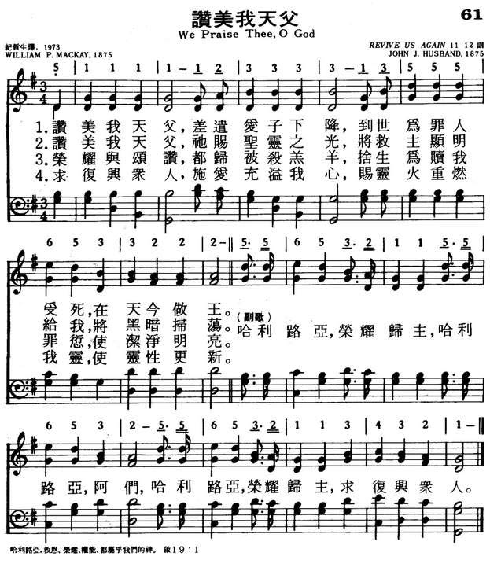

|
|
|
|
1 We praise thee, O God, for the Son of thy love, Refrain: 2 We praise thee, O God, for thy Spirit of light 3 We praise thee, O God, for the joy thou hast giv’n 4 Revive us again, fill each heart with thy love. |
061赞美我天父
1.赞美我天父，差遣爱子下降，
到世为罪人受死，在天今做王。 哈利路亚，荣耀归主，哈利路亚，阿们， 哈利路亚，荣耀归主，求复兴众人。 2.赞美我天父，祂赐圣灵之光， 将救主显明给我，将黑暗扫荡。 哈利路亚，荣耀归主，哈利路亚，阿们， 哈利路亚，荣耀归主，求复兴众人。 3.荣耀与颂赞，都归被杀羔羊， 舍生为赎我罪愆，使洁净明亮。 哈利路亚，荣耀归主，哈利路亚，阿们， 哈利路亚，荣耀归主，求复兴众人。 4.求复兴众人，施爱充溢我心， 赐灵火重燃我灵，使灵性更新。 哈利路亚，荣耀归主，哈利路亚，阿们， 哈利路亚，荣耀归主，求复兴众人。 |
|
https://www.mred365.cn/szxg/7064.html
 https://hymnary.org/hymn/AMEC1984/page/100
|
|
|
|
|
.jpg)

| Text: | We Praise Thee, O God (Revive Us Again) |
| Author: | William P. MacKay, 1837-1885 |
| Tune: | REVIVE US AGAIN |
| Composer: | John J. Husband, 1760-1825 |
| Short Name: | W. P. Mackay |
| Full Name: | Mackay, W. P. (William Paton), 1839-1885 |
| Birth Year: | 1839 |
| Death Year: | 1885 |
Mackay, William Paton, M.D., was born at Montrose, May 13, 1839, and educated at the University of Edinburgh. After following his medical profession for a time, he became minister of Prospect Street Presbyterian Church, Hull, in 1868, and died from an accident, at Portree, Aug. 22, 1885. Seventeen of his hymns are in W. Reid's Praise Book, 1872. Of these the best known is "We praise Thee, O God, for the Son of Thy love" (Praise to God), written 1863, recast 1867. [Rev. James Mearns, M.A.]
--John Julian, Dictionary of Hymnology, Appendix II (1907)
======================
Born: May 13, 1839,
Montrose, Scotland.
Died: August 22, 1885, Portree, Scotland, of an accident.
Mackay graduated from the University of Edinburgh and initially worked as a doctor. However, he was ordained, and in 1868 became pastor of the Prospect Street Presbyterian Church in Hull. He married Mary Loughton Livingstone 1868 in Kingston Upon Hull, Yorkshire; they were living in Sculcoates, Yorkshire, as of 1881. Seventeen of his hymns appeared in W. Reid’s Praise Book in 1872.
Sources:
Hustad, p. 278
Julian, p. 1667
Reynolds, p. 365
http://www.hymntime.com/tch/bio/m/a/c/mackay_wp.htm
Notes
The common attribution to John J. Husband is based on a brief resemblance to his tune ST. STEPHEN'S, first published in Psalmodia Evangelica, vol. 2 (1789), but the resemblance only extends to the first two measures. These tunes should not be regarded as the same. This gospel/revival tune was written by William P. Mackay for his own text, "Revive us again," the text having been published in William Reid's Praise of Jesus (1863), tune in the Revival Tune Book (1863/4), combined in William Reid's The Praise Book (1866), where it was called HALLELUJAH. Reid's preface indicates Mackay wrote his own tunes.
For more detailed information, see the article at Hymnology Archive.
LX1802
We Praise Thee, O God
061赞美我天父
颂新
这首《赞美我天父》，实际上是赞美三位一体的主宰。第一节赞美天父差遣爱子降世，为罪人受死；二至四节分别是赞美我主耶稣
受死，复活，升天；第五节赞美保惠师圣灵开导、照照亮、感化人心，概括了三一真神的要道。
词作者是苏格兰信徒麦凯（W。P。Mackay,1839-1885)麦凯毕业于爱丁堡大学医学院，行医多年后，得蒙神的恩召，献身从事传道工作。1868年起，任苏格兰赫尔地方长老会牧师，直到1885年息劳去世。平生写了许多首诗歌，现在通行的只有这一首。据说他是根据两节经文写成的。一是“求你在这些年间复兴你的作为”（哈3：2）；一是“你不再我们救活，使你的百姓靠你欢喜吗”（诗85：6）。原作写于1863年，1867年加以润色，1875年被收入桑基与布立斯合编的《福音圣诗与圣歌》之内，给它起名为《主啊，恳求复兴主工》，因而成为一首比较流行的福音诗歌，特别是副歌愉快热切、活泼易唱。
这首歌的流行也得力于赫斯本德所谱的曲调。赫斯本德（J。J。Huband，1760-1825）出生于英国，以后定居美国费城，在费城圣公会保罗堂任职员，业余兴办唱诗学校。这首曲调原来配于另一首赞美诗《欢乐不息》，但注明也可用于《赞美我天父》。经过几十年的考验，证明配合这首诗是合适的。
《新编赞美诗》收录在第4首《赞我天父歌》